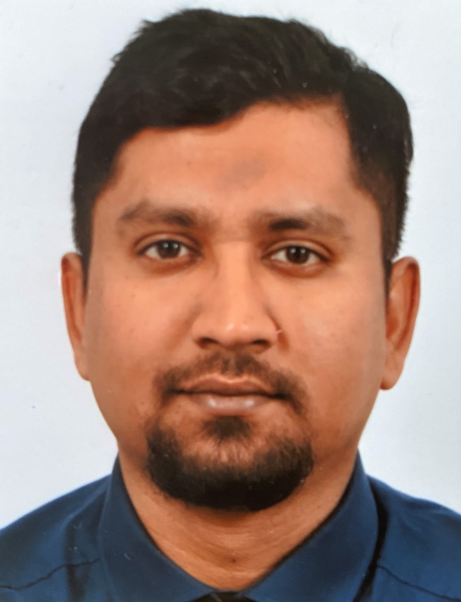

The people
behind GaziLab.
A research environment built around experimental rigor, open collaboration and data-driven science.

Dr.-Ing. Gazi Hasanuzzaman
Principal Investigator / Research Group Leader · Aerodynamics, Machine Learning & Flow Control
Dr.-Ing. Gazi Hasanuzzaman is a Principal Investigator and Research Group Leader at Brandenburg University of Technology Cottbus-Senftenberg (BTU Cottbus-Senftenberg), Germany, where he leads research in experimental aerodynamics, turbulent flows, active flow control and data-driven methods for fluid mechanics. He is also a Habilitation Candidate in Fluid Mechanics.
His research focuses on understanding and controlling complex turbulent flows through a combination of high-resolution aerodynamic experiments, advanced flow-measurement techniques and data-driven modelling. Particular emphasis is placed on turbulent boundary layers, skin-friction drag, uniform micro-blowing, coherent structures, bluff-body aerodynamics and flow-control strategies relevant to sustainable aviation.
His experimental research employs advanced optical and laser-based measurement techniques, including Particle Image Velocimetry (PIV), Stereo-PIV, Time-Resolved PIV, Laser Doppler Anemometry (LDA), Hot-Wire Anemometry (HWA) and Helium-Filled Soap Bubble (HFSB) tracers.
A major direction of his current research is the integration of experimental fluid mechanics with machine learning and physics-informed methods. Through the DFG-funded SPADE-AIM project, he investigates how aerodynamic measurements and artificial intelligence can be combined to develop predictive models for complex shear flows and aerodynamic drag.
He has established international research collaborations with institutions including DLR, HZDR, LMFL Lille and KTH Royal Institute of Technology, and has participated in European research programmes including EuHIT.
Dr. Hasanuzzaman completed his doctoral studies at Brandenburg University of Technology Cottbus-Senftenberg with summa cum laude. His doctoral research investigated turbulent boundary layers and active flow control for reducing skin-friction drag in subsonic transport aircraft, combining wind-tunnel experiments with advanced velocity measurements.
Alongside his research activities, he is actively involved in teaching and experimental fluid-mechanics education. He has taught aerodynamics and fluid mechanics since 2016 and is responsible for the Experiments in Aerodynamics and Fluid Mechanics (EAFM) module at BTU Cottbus-Senftenberg.
Education
- 2015–2021 — Ph.D. / Dr.-Ing., Brandenburg University of Technology Cottbus-Senftenberg, summa cum laude
- M.Sc. — [degree / institution / year]
- B.Sc. / Dipl.-Ing. — [degree / institution / year]
Professional History
- 2025–present — Principal Investigator / Research Group Leader, BTU Cottbus-Senftenberg
- 2021–present — Habilitation Candidate, BTU Cottbus-Senftenberg
- 2021–2025 — Project Leader, DFG project SENSAERO
- 2015–2021 — Research Associate, BTU Cottbus-Senftenberg
- 2015–present — Teaching in Aerodynamics and Fluid Mechanics
Research Focus
Experimental Fluid Mechanics · Turbulence · Aerodynamics · Flow Control · Drag Reduction · PIV · Wind-Tunnel Experiments · Coherent Structures · Machine Learning · Physics-Informed Neural Networks · Data-Driven Fluid Mechanics
Interested in working
with us?
For research collaborations, student projects, internships and other opportunities, get in touch.
Contact GaziLab →